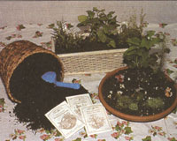
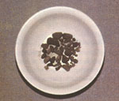
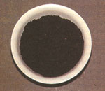
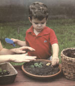
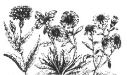

Make an Indoor Garden With Your Children.
If your kids are glued to the television set all day, it's time to unpry them. Here's a method that they'll actually enjoy: introduce them to gardening. By teaching children how to plant and grow an indoor garden, you allow them to create their own magical world. It's also a good way to teach responsibility and respect for the environment. So why not help your budding gardener bring a bit of the outdoors inside this fall? Below are four easy designs that will encourage your children to put down the TV guide and pick up a gardening tool.
Herbs are not only beautiful and easy to grow, but they come in an abundance of varieties. Children may enjoy choosing their design around a specific theme, such as "lovely s cents" for making potpourri, or "culinary herbs" for making harvest treats. No matter which theme your gardener decides upon, there are some basic supplies you will need: a rectangular windowsill planter or other flower pot, potting compost for seedlings, pebbles for drainage, seeds or started plants, and a small trowel or shovel.
If your child enjoys the wonderful smells of potpourri, suggest a garden filled with the sweet aromas of lavender, lemon thyme, mints, lemon balm, and scented geraniums. Your child will take great pride in drying the flowers and leaves and then handing them out as potpourri gifts for family and friends. (If your children start their gardening project now, they will be able to give batches of home-grown potpourri to others over the holiday season.)
Your children may want to create a desert, complete with cacti and snake, or a tropical rain forest.
Culinary herb gardens always go over big with children, too. Among favorite harvest treats are peppermint, spearmint, nasturtiums, and basil. When buying your herbs, remember that some are easily grown from seeds-like nasturtiums, basil, and dilland others are slower growing and better purchased as small plant-like mint, thyme, and sage.
One thing to remember is that mints will frequently take over any container they are planted in. However, if you are still interest ed, you have two planting options: First, you can choose to grow only mint in your con tainer. Explain to your children that they do not need a whole lot of plants to enjoy an in door herb garden. You can also highlight the ever-popular frosted mint treats.
This delicacy is easily made by dipping several mint leaves into lightly beaten egg white and granulated sugar, and allowing them to dry. (You'll be surprised how happy you're kids will be with a garden of only mint.) Your other option is to keep the mint in a small container embedded into the garden, which will keep the roots bound in a contained area. That way it won't take over the whole garden.
First, put the pebbles in the container's bottom to help with drainage. Add a good layer of compost. If you are using small plants, carefully tip them from their pots and place them in the compost. Fill up the container with more compost, pat it down so it's firm around the plant, and then water. If you are planting from seed, you may start the seeds in peat pots and then transfer them to the planter or plant the seeds directly into the compost. Add another layer of compost to the container and water. If you cover the container with a plastic bag, it will create moisture, and you will be able to water the seedlings less often. When the weather is warm enough, transplant your garden outside and continue enjoying your herbs all summer long.
For this garden, you will need some small stones, a large bowl or deep dish (the saucer from large clay pots works well), compost, a small mirror, small plastic animals, and some dried flowers. Lastly, and most importantly, you will need some small plants, such as alyssum, hens and chicks, thyme, or miniature trees.
First, lay the stones on the bottom of your container, and fill it with a layer of compost. Place your mirror in the compost so that it resembles a still pond, and decorate the surrounding area around with dried flowers and small stones. They should be positioned so that the mirror will catch their reflection (just as a real pond would).
Then position your plants so they look most natural. For example, you could make small groupings of taller plants and trees to resemble a wooded area on one side, and group some smaller plants in other areas. When you and your child are happy with the arrangement, place the plants into the compost, and firm more compost around their bases. Water your garden well.
Children's favorite part of the project is decorating with tiny plastic animals. They can place a raccoon near the wooded area, or a group of ducks near the pond. Older children can make a more elaborate garden complete with paths and decorated with miniature garden accessories. Your children may want to create a desert, complete with cacti and snake, or a tropical rain forest with a gorilla (a great way to introduce the the importance of saving rain forests and endangered species).
When your garden is complete, place it on a sunny windowsill and be sure to water as the soil begins to dry out. Certain plants may occasionally need to be clipped so they'll remain small enough for the de sign. If you select your plants from a nursery, ask about their growth habits before you plant them.
With a little help from an adult, this is an easy project for children to complete. Visit a nursery to select your bulbs and ask if they are prechilled. Prechilled bulbs will bloom indoors during the winter months; those that aren't will bloom indoors during their regular spring season. Children love to look through floral catalogs when selecting bulbs. Of course, they'll also love ambling through nurseries, picking their favorite flowers and plants.
Ask kids to imagine what they would look like in a crate. Flower combinations are endless. However, keep your eyes open for fragrant narcissi, daffodils, hyacinths, and tulips, which are especially colorful.
Any wooden crate will do. Once you find a good-size one, line the crate with a sheet of heavy plastic. Fold a border over the edge of the crate and tack it down. Add some drainage holes in the bottom of the plastic with scissors.
Next, place some stones on the bottom for drainage and add soil. Plant your bulbs pointed end up, and follow the directions provided by the nursery. Cover with more soil and add water. Always make sure that your garden doesn't dry out. As a finishing touch, tie a ribbon around your crate. Soon you will have a crate full of blooms to enjoy.
This is a fun project that requires little maintenance. All you need is a large bottle with a lid (a pickle or mayonnaise jar will work fine), potting soil, charcoal, an old fork and spoon, a small natural sponge, a funnel or piece of paper, some small stones or washed gravel, a nail, four 12-inch pieces of cane, and some rubber bands.
Making bottle gardens is best for older children. Be prepared to give younger children a good deal of supervision. When selecting plants for your bottle garden, keep in mind that you will want taller varieties for height and smaller plants to act as a ground cover. Some other good choices for bottle gardens include baby's tears, button ferns, African violets, and coffee plants. Again, allow your children to select their own plants.
Wash out your bottle thoroughly and remove any labels. (You may have to soak the bottles in hot water if they are difficult to peel off) Then use a funnel to pour in a layer of small stones or gravel. If you don't have a funnel to use, improvise with rolledup paper. Make sure the gravel or stones are distributed evenly across the bottom before adding the next layer. The charcoal comes next, followed by the potting soil.
Next, you will have to lengthen your tools so you can reach down into the jar. Take your rubber bands and fasten a length of cane onto the fork, spoon, nail, and sponge. Using your fork or spoon, dig small holes in the soil so you'll be able to position your plants. Should the sides of the bottle get dirty as you are working, clean them with the dampened sponge. Remove the plants from their containers, and lower each plant into the depressions of the potting soil. Do this by piercing its root ball with the nail. Then with the spoon or fork, carefully firm the soil down around each plant. Make any necessary adjustments, and then dean the bottle sides again with the sponge. Water, and cover the bottle.
To maintain your bottle garden, keep the container out of direct sunlight and monitor the amount of condensation on the bottle's inside. If you see no water droplets on the sides, add more. If they are covered with streams of moisture, leave the bottle top off for a day.
|
 |
 |
 |
|
 |
 |
|